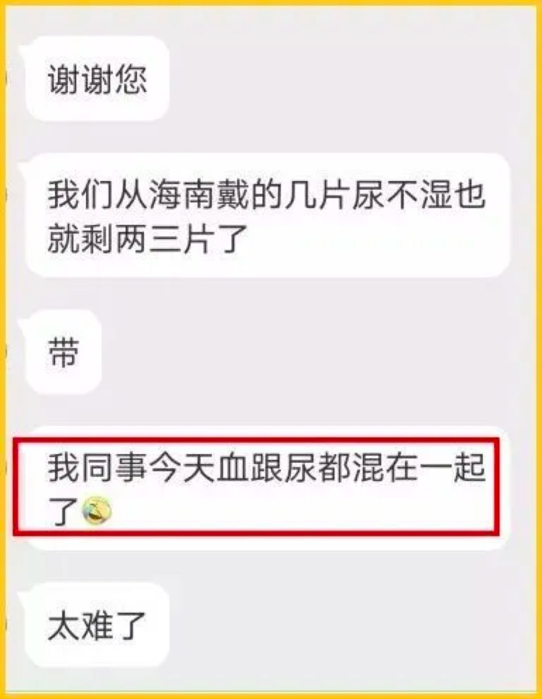
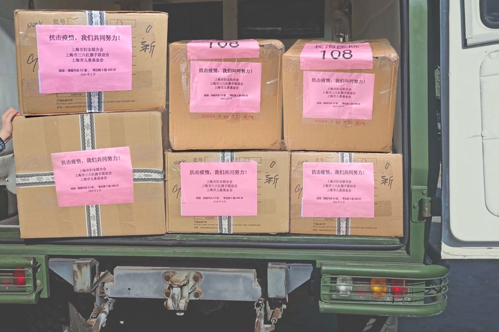
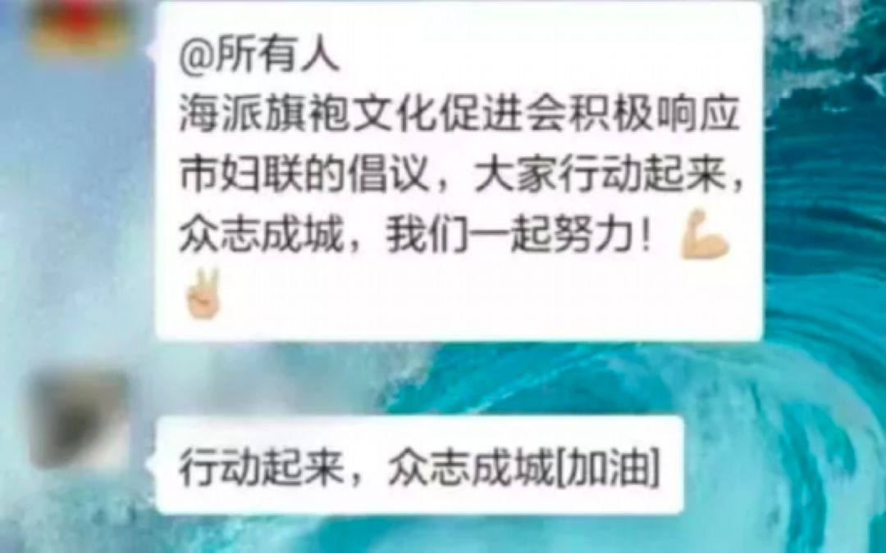
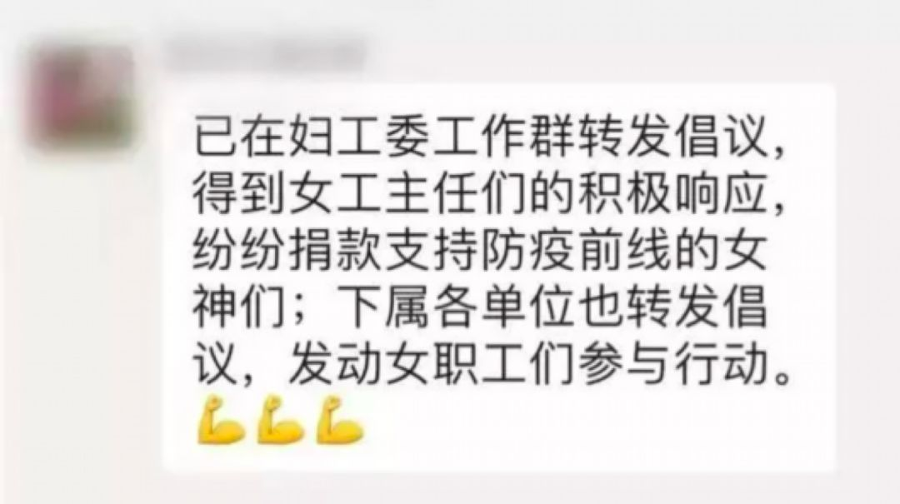
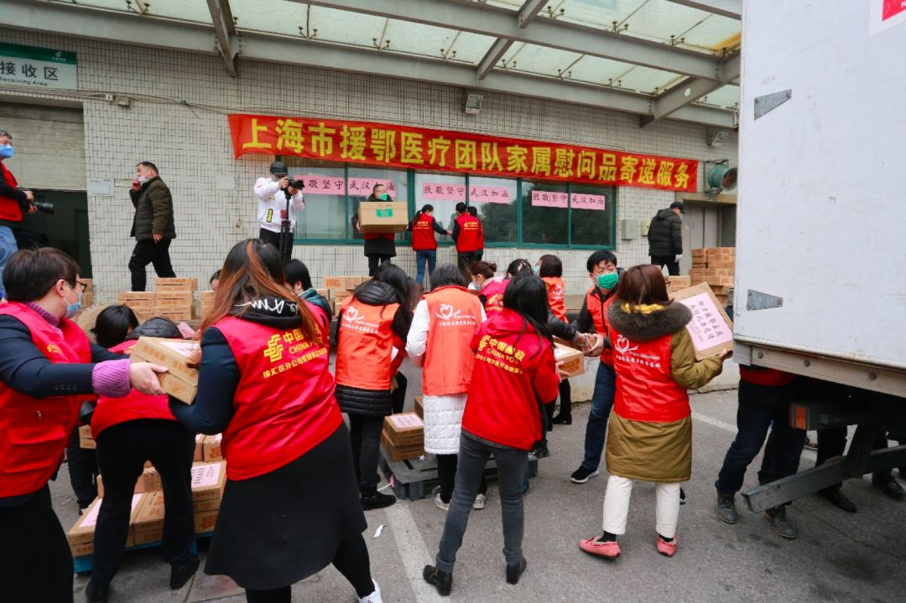
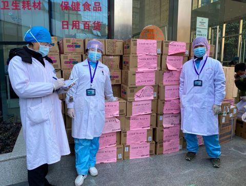
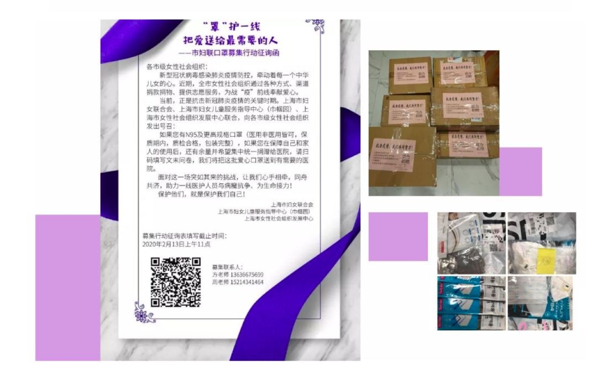
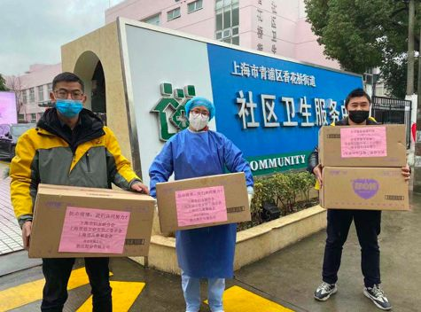

一线医护者故事：没有一个冬天不可逾越
原文链接 备份链接 // “在清水里泡三次，在血水里浴三次，在碱水里煮三次，我们就会纯净得不能再纯净”。 托尔斯泰在《苦难的历程》中如此描述人们从革命走向胜利的艰辛过程，在此时，身处武汉的一线医务工作者又何尝不是经历着清水、碱水甚至血水 …
在全国人民上下一心抗疫冲锋的同时，上海始终没有忘记身在一线的“她们”。
记者 | 应 琛
在抗疫第一线，一套防护服需要穿多久？目前绝大多数的报道中，是8个小时，但实际上有时可能更久。因为怕浪费物资，医护人员往往会穿尿不湿上阵，坚持不上厕所，直到工作结束再脱下。
同样也是在绝大多数报道中，由于一线防护物资紧缺，相关机构、企业、个人向疫情一线捐助口罩、防护服、护目镜等防护用品的故事也常见于报端。
但其中，有一种需求虽然一直源源不断传出，但因为声音没有那么大，起初并不像防护物资那般受到重视。这种需求就是一线女医护人员对于生理用品的需要。
前线女性生理用品到底匮乏到什么程度？从微博的相关话题中，可见一斑——
一线的护士忍受着生理痛，向护士长申请了两天都没能拿到卫生用品。

支援方舱医院的海南护士只能靠尿不湿坚持，“血跟尿混在一起”。

一个河北医疗队的护士生理期，裤子都湿透了。但她哭着不想出来换，只为节省一套防护服。
令人心酸的是，在卫生用品缺乏、生理正常需求得不到照顾的情况下，部分一线人员甚至选择吃短效避孕药来延迟经期。
2月7日，微博网友@梁钰 Stacey 在微博发起#姐妹战疫安心行动#的话题，号召向一线的女性医护人员捐赠经期护理用品。

前些天，＃近4万包卫生巾运抵武汉＃的话题登上微博热搜。报道称，中国妇女发展基金会紧急筹集的近4万包卫生巾已运抵武汉，开始向抗疫一线女医护人员发放。湖北省妇联安排将这批卫生巾发放给驰援武汉市武昌区、青山区的医护人员，以及华中科技大学同济医学院附属同济医院抗疫一线的医护人员。
事实上，在向一线女医护人员捐生理用品的接力中，上海最早行动。上海市妇联在全国第一个发出了为一线女医护募集生理期用品的声音。

2月1日，市妇联、市三八红旗手协会与交大安泰EMBA领琇汇共同募集女性专用考拉裤送往武汉33家医院及黄冈相关医院。
早在1月31日，上海市妇联、市总工会女职工委员会便发起倡议，希望有考拉裤（女性生理期护理用)等产品的爱心企业积极捐赠，或以低于市场价的爱心价格提供货源；同时接受现金形式的捐助，募捐款项专门用于购买考拉裤等产品。
一句不经意的话引起48小时紧急行动
“防护物资肯定缺啊……你知道的，防护服这些他们一穿就是8个小时不脱的。放平时还好，忍忍也就过去了，但女医生护士遇到生理期，真的就相当难受了……”1月31日，上海市妇联在向瑞金医院的医生了解前线的需求时，这句不经意的话，引起了市妇联的高度重视。
这天，上海市妇联从支援疫情最前线的医疗卫生机构获悉，医生中有50%以上为女性，一线女护士更超过90%。在女性生理期，卫生巾最多2小时就应更换，否则易滋生细菌。
如何让她们能够持续投入高强度的工作，考虑到一线抗疫的特殊情况，上海市妇联副主席、新闻发言人翁文磊在接受《新民周刊》采访时表示，相对于卫生巾而言，考拉裤、拉拉裤等一些特殊卫生护理用品似乎更为实用，可以让一线女医护人员最大限度地减少穿脱防护服的次数。
想法有了，如何让想法落地。巧合的是，市妇联主管的上海市儿童基金会刚刚通过民政部门的批准，可以扩大捐助对象。“儿基会的捐助对象一般是18岁以下的少年儿童。但以往每次遇到重大灾情，我们儿基会都会提前和民政部门申请扩大捐助范围。”翁文磊告诉记者，得知这个好消息后，市妇联立即立项，向一线女医护人员捐助考拉裤。

2月1日傍晚5时，市妇联、市儿基会、市女企业家协会首批100箱（9600片）女性专用考拉裤搭乘正要驶往武汉的集卡启运
经过综合考虑，所有募捐物品除了捐赠给上海赴武汉医疗队女性工作人员外，还包括上海市公共卫生临床中心、上海市疾控中心一线女性医务人员，以及上海市110个发热门诊一线女性医务人员。
而募捐的物资数量和金额，则是基于人数、价格等计算得出，“如果每人经期为4天左右，每日至少使用3片卫生巾，那么每人每月至少需要12片。我们想发动大家先捐1个月的量，所以提出首批捐5万片。而估算的每片考拉裤的平均价约为6块钱，所以募集30万。”
当晚，市妇联的倡议书就通过网站、微信公众号、市妇联的各个群组等平台对外发布。


第二天，市妇联的电话被“打爆”了！“没想到大家响应得那么快。非常感动的是，很多市民捐钱，100、200、500元这样捐出来的。”翁文磊说，倡议也得到女企业家协会的大力支持，有成员立马捐出了考拉裤，还有成员表示可以免费提供物资运输，各医院也都欣然接收，“我们送去他们都感激得不得了，没有碰到不愿意的，也没有碰到任何障碍，非常通畅”。

2月6日，市妇联、市儿基会为援鄂家庭捐赠物资
2月1日傍晚5时，首批100箱（9600片）女性专用考拉裤便“搭乘”上了驶往武汉的集卡。而截至当天，项目已募集到了价值近200万元的物资和善款，远远超出了市妇联首批募集目标。
在倡议发出后的48小时内，2月2日下午，首批物资运抵武汉，随后被立即送到了医务人员手中。同时，向本市女医护人员捐赠考拉裤也已集结准备运出。
2月1日傍晚5点，第一批100箱考拉裤启运
截至2月12日，上海市妇联、上海市儿童基金会已经派送和动员赠送到上海赴武汉各医疗队、孝感、黄冈、随州当地医院的考拉裤、成人纸尿裤58820片。

2月19日，市妇联、市儿基会、市女企业家协会捐赠孝感市中心医院100箱安心裤
最新数据显示，截至2月26日，在各方的大力支持和广泛参与下，由上海市妇联牵头捐赠的考拉裤总数已超过13万片。

2月18日，市妇联、市儿基会、日本大王公司捐赠的1086箱纸尿裤等卫生用品通过邮政航空和专车运抵孝感市，分配至县市区和市直有关医疗机构
记者了解到，上海市妇联不光为女性募集生理卫生用品，2月13日，上海市妇联、上海市妇女儿童服务指导中心（巾帼园）、上海市女性社会组织发展中心联合发起“罩”护一线，把爱送给最需要的人口罩募集行动，号召市级女性社会组织将“战疫”前线紧缺急需的口罩节约下来，捐赠给更需要的人。

市妇联等组织联合发起“罩”护一线，把爱送给最需要的人口罩募集行动
截至目前，共收到市级女性社会组织、会员和爱心企业捐赠的55317个口罩（包含两个护目镜），其中54147个口罩（包含两个护目镜）已分批送往第八批上海援鄂医疗队和上海地区有需要的医院，剩余1170个口罩将送至下一批援鄂医疗队。
在上海，女性的需求一直被看见
很快，这场由上海最早行动的支援一线女医务人员卫生用品的行动得到了越来越多机构和个人的支持。
人民日报官方微博2月14日发布消息，全国妇联所属中国妇女发展基金会紧急募集定向援助一线女性医务人员款物225万元，其中用于定向采购安心裤资金20万元、价值100万元卫生巾2020箱、价值5万元安心裤2万个和价值100万元的秋衣秋裤。首批2万个安心裤将于近日运抵武汉。

2月18日，新华社发文称，中国妇女发展基金会紧急筹集的近4万包卫生巾已运抵武汉，开始向抗疫一线女医护人员发放。
一线女医护人员的窘境终于渐渐得到解决。但这件事却也暴露了另一个人们主观意识上的种种问题。
有些人认为，女性卫生用品并非必需品。有人质疑，姨妈巾有口罩重要？甚至有人说，人命关天时，哪有时间关心“裤裆那点事”。
不论是生理知识不足，还是心理上刻意贬低经期这一正常生理过程，这些漠视的行为都让人不齿。
在此次抗疫期间，习近平总书记说，要把人民群众生命安全和身体健康放在第一位。同样的，习总书记也多次强调，要坚持男女平等基本国策。难道逆行的女性，她们的生命安全和身体健康，不需要被呵护吗？
正如人民日报在《女性逆行，尊重比赞美更重要》的评论中写道——
_“武汉金银潭医院重症监护室一位护士接受媒体采访，谈及自己处于生理期的透支状态，结果再播出时，‘生理期’三字不见了。_这让人费解。”
_“然而，有记者热衷报道怀孕9个月的护士身穿防护服在一线坚持，流产才10天的护士又回到一线工作……鼓励这样的极端行为，考虑过对母婴的伤害、对当事人健康威胁有多大吗？_即便是自愿，媒体要做的也应是劝阻而不是颂扬。”
_“说回直播女护士含泪被剃光头，至少有欠同理心和同情心。_”
其实，这类报道本身并无恶意，甚至记者们的内心也确实被“感动”。但这至少也说明了，尊重和爱护女性的意识，远没有深入人心。或许，当人民可以坦然公开讨论一线女性生理期需求时，这个社会才是正常的、安全的、温暖的。

那些每天坚守在岗位上，承受着极高暴露风险的女性医务人员，还在忍受一种作为女性最原始的痛苦和尴尬
所幸，在全国人民上下一心抗疫冲锋的同时，上海始终没有忘记身在一线的“她们”。
“有一个很容易被忽略的团队，就是我们的护理团队。你认为我们的医生有多重要，我们的护理姐妹们就有多重要。”上海医疗救治专家组组长、华山医院感染科主任张文宏在此前接受采访时就曾强调，现在都在歌颂医生，但比较完整的说法应该是医护人员。
“我们在推进捐赠的过程中，接触到的各区负责对接工作的男性负责人时，他们也都是非常积极地在帮忙，丝毫没有觉得这不重要。”翁文磊表示，“贯彻男女平等基本国策，将社会性别意识纳入决策主流，目前已经有了非常良好的基础。我们希望今后遇到类似的情况，这些女性特殊时期需要的用品在最初就能够得到重视，并出现在政府相关部门采购的保障物资里，再由社会力量作为补充。”

上海市青浦区社区医院接受市妇联捐赠

征集令
《新民周刊》现面向全国征集新冠肺炎采访对象和真实故事：
如果你是参与抗击新冠肺炎疫情的医护人员或其家属，我们希望聆听你的“战疫”故事，也希望传达你的诉求。
如果你是确诊、疑似患者本人或家属，我们希望了解你和家人如何“抗疫”的过程，让外界了解你的真实经历。
如果你是疫情严重地区的普通市民，我们希望展现你的乐观，并倾听你所需的帮助。
如果你是公共服务人员或各类捐助者，我们希望看到你的“最美逆行”，记录下你的无私。
……
抗击新冠肺炎疫情，我们诚征对疫情了解的社会各界人士，提供相关线索，说出你的故事，让我们用新闻留存这一切。
《新民周刊》新冠肺炎线索征集值班编辑联系方式（添加时请简要自我介绍）：
周一：应 琛 微信号：paulineying0127
周二：金 姬 微信号：gepetta
周三：黄 祺 微信号：shewen-2020
周四：周 洁 微信号：asyouasyou
周五：孔冰欣 微信号：kbx875055141
周六：吴 雪 微信号：shyshine1105
周日：姜浩峰 微信号：jianggeladandong
✳如你需要捐赠物资，可与以下两位工作人员联系:王勇：WangYong-SH 吴轶君：rommy150708（添加时请注明“捐物资”，方便工作人员快速通过您的申请，谢谢。）
新闻是历史的底稿，你们是历史的见证者。期待你的故事、你的线索！

▼
大家还都在看这些
▼
新民周刊所有平台稿件， 未经正式授权
一律不得转载、出版、改编或进行
与新民周刊版权相关的其他行为，违者必究


原文链接 备份链接 // “在清水里泡三次，在血水里浴三次，在碱水里煮三次，我们就会纯净得不能再纯净”。 托尔斯泰在《苦难的历程》中如此描述人们从革命走向胜利的艰辛过程，在此时，身处武汉的一线医务工作者又何尝不是经历着清水、碱水甚至血水 …
原文链接 备份链接 前线医护人员的卫生巾和安心裤还够吗？ 2月6日，24岁的女孩梁钰在微博上发问：“前线医护人员的卫生巾和考拉裤还够吗？这么多的女性医护人员是如何解决她们的月经问题啊？现在防护服不够，想必也是一片卫生巾用一天，也很容易感 …
原文链接 备份链接 2月18日，下午六点半，天气也像戴了口罩，灰蒙不爽。七点后，小区依然处于武汉最严管制中，人车限行。因为有抗疫指挥部的放行证明，我们得以出了小区。 这天的工作是接收来自北京的一车物质：女性卫生用品。 根据一周前报道，截 …
原文链接 备份链接 持续的疫情给很多人带来焦虑、担忧、害怕等情绪，先要坦诚面对，才能度过难关 ***********杨立赟 韩舒淋 | 文*********** ***********余乐 | 编辑*********** “我和妈妈的核酸 …
原文链接 备份链接 武汉封城，已经过去了一个月。 说话像机关枪一样快的武汉和湖北人呢？有人说，种种难以言说之处，让他们甚至都不再发朋友圈了。 然而，在疫情的中心，仍然有很多人在坚守着一个个平凡生活的片段，也许是遇见那杯熟悉又戒不掉的咖 …